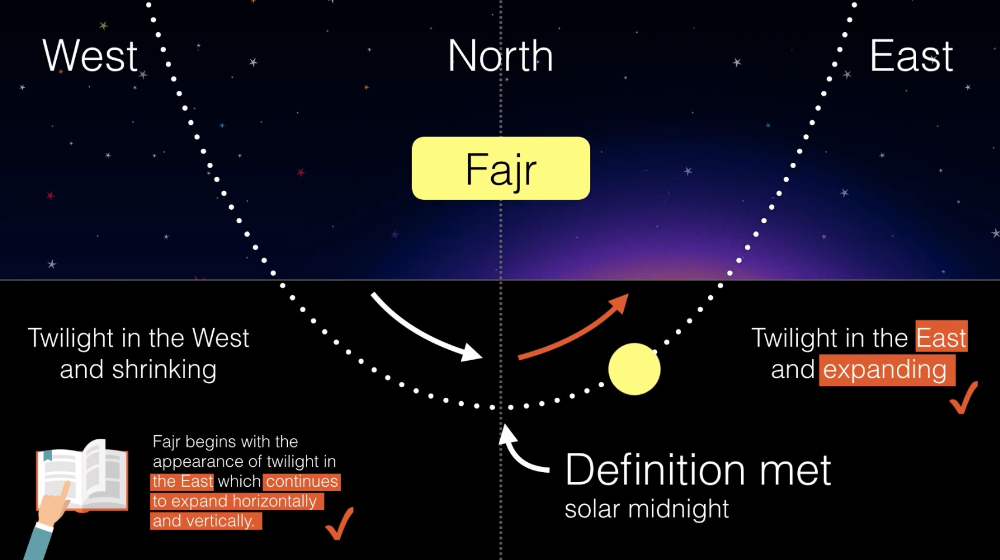

A modern misunderstanding of Fajr and misapplication of Aqrab al-Ayyām during persistent twilight
Draft — Not for release
19 October 2017
During persistent twilight, some institutions (in England) set the beginning of Fajr to approximately 1.20am. They do this out of a misunderstanding of Fajr and misapplication of Aqrab al-Ayyām (the nearest day). Fajr during this period manifests. It occurs at solar midnight (approximately 1am). We set forward a number of arguments — from the statements of jurists, astronomy, natural order, logic and verses of the Qurān — that show Fajr occurs at solar midnight and why the modern understanding of Aqrab al-Ayyām is both irrational and misapplied. In this article the definition of Maghrib includes white twilight (unless otherwise mentioned).
I. Jurists explicitly state that Fajr manifests during persistent twilight
Fajr begins, in all four mathāhib, from the appearance of light in the east which expands both horizontally and vertically (al-Fiqh ʿalā al-Mathāhib al-Arbaʿah).ووقت الصبح من طلوع الفجر الصادق ، وهو ضوء الشمس السابق عليها الذي يظهر من جهة المشرق، وينتشر حتى يعم الأفق ، ويصعد إلى السماء منتشرا — الفقه على المذاهب الأربعة This occurs even during persistent twilight. During this period the signs of ʿIshāʾ (the complete disappearance of twilight) do not occur, but the signs of Fajr (spreading light) do. This occurs at solar midnight (also known as half night, solar anti-transit time and Nisf al-Layl) by scientific consensus. Hence, during this period, Fajr is established by definition and it is not appropriate to make an estimation for it like we do with ʿIshāʾ.
This has been mentioned explicitly by a number of authorities including Imām Ibn ʿĀbidīn al-Shāmī(). He says that during persistent twilight, “The disagreement between jurists of the (Ḥanafī) school is only about the compulsion of ʿIshāʾ and Witr. We have never seen anyone who said that Fajr is also qaḍāʾ in this situation. But they termed it Fajr. That is because Fajr according to them is the name of the spreading light on the horizon as it is confirmed in authentic ḥadīth and as we quoted that there is no condition of darkness before it.”الخلاف المنقول بين مشايخ المذهب إنما هو في وجوب العشاء والوتر فقط ، ولم نر أحدا منهم تعرض لقضاء الفجر في هذه الصورة ، وإنما الواقع في كلامهم تسميته فجرا ؛ لأن الفجر عندهم اسم للبياض المنتشر في الأفق موافقا للحديث الصحيح كما مر بلا تقييد بسبق ظلام . على أنا لا نسلم عدم الظلام هنا — رد المحتار على الدر المختار
Ḥanafī jurists have two opinions regarding ʿIshāʾ during persistent twilight: 1) the obligation is dropped, and 2) the obligation remains as qaḍāʾ. Regarding the second, Imām Ibn ʿĀbidīn() says, “They (our jurists) have only considered ʿIshāʾ present by making it obligatory to perform after Fajr”.وإنما قدروه موجودا لإيجاب فعلها بعد الفجر — رد المحتار على الدر المختار If the signs of Fajr also do not occur, then using the same methodology, Fajr too would have to be offered as qaḍāʾ. This is what Imām Ibn ʿĀbidīn() is referring to when he says that he has “never seen anyone who said that Fajr is also qaḍāʾ in this situation.”
The Imām also says that if Fajr is estimated during persistent twilight it would lead to the inconsistency that “ṣubḥ does not start with the (actual) rising of dawn.”وأيضا لو فرض أن فجرهم يطلع بقدر ما يغيب الشفق في أقرب البلاد إليهم لزم اتحاد وقتي العشاء والصبح في حقهم ، أو أن الصبح لا يدخل بطلوع الفجر — رد المحتار على الدر المختار
Imām Ibn ʿĀbidīn() makes it clear that Fajr occurs even in extreme latitudes where Maghrib lasts for only a few minutes. He discusses the scenario with regards to “lands where dawn occurs just as the sun is setting or sometime after it sets such that there is not enough time for a person who is fasting to eat enough food to sustain himself.” The Imām says, “We cannot maintain that fasting is not obligatory under these conditions due to the existence of the reason for the fast — witnessing part of the month (of Ramadān) and the occurrence of dawn every day (طلوع فجر كل يوم).”لم أر من تعرض عندنا لحكم صومهم فيما إذا كان يطلع الفجر عندهم كما تغيب الشمس أو بعده بزمان لا يقدر فيه الصائم على أكل ما يقيم بنيت … ولا يمكن القول هنا بعدم الوجوب أصلا كالعشاء عند القائل به فيها ; لأن علة عدم الوجوب فيها عند القائل به عدم السبب ، وفي الصوم قد وجد السبب وهو شهود جزء من الشهر وطلوع فجر كل يوم — رد المحتار على الدر المختار Since tulu al-Fajr occurs, the Imām concludes that fasting is necessary. The dispensation which the Imām gives to delay the beginning of the fast in this situation is only out of necessity to preserve one’s life and not because there is leeway in determining the actual beginning of dawn.
Imām Aḥmad al-Ṭaḥṭāwī() also says that during persistent twilight, “Fajr occurs with the manifestation of whiteness spreading from the east side (of the sky).” ووجود الفجر بظهور البياض منتشرا من جهة المشرق — حاشية الطحطاوي على الدر المختار He too explains that darkness is not a condition for Fajr. During persistent twilight this definition (whiteness spreading from the east) occurs at solar midnight. Since the definition of Fajr occurs, estimation is not applicable.
He says, “And where dawn occurs (طلع الفجر) before the ending of the red twilight (of Maghrib), their fast is for (almost) the entire night. They should only eat once or twice with a short gap, before the appearance of dawn (ظهر الفجر).”و حيث يطلع الفجر قبل مغيب الشفق الاحمر أنهم في الصوم في مدة الليل يأكلون فيها اما مرة واحدة أو مرتين بفاصل يسير قبل ظهر الفجر — حاشية الطحطاوي على الدر المختار
Imām Badr al-Dīn al-ʿAynī() says, “It is said that some of the people of Bolghar do not find the time of ʿIshāʾ for (approximately) 40 nights every year. As the sun sets from the west, dawn appears (ظهر الفجر) from the east.”قال العيني: ويذكر أن بعض أهل بلغار لا يجدون في كل سنة وقت العشاء أربعين ليلة ، فإن الشمس كما تغرب من ناحية المغرب يظهر الفجر من المشرق — حاشية الشلبي على شرح الزيلعي [Twilight rising from the east occurs at solar midnight.]
Imām ʿUthmān al-Zaylaʿī() says, “Those who do not find the time of ʿIshāʾ and Witr because they are living in a place where dawn rises (طلع الفجر) after sunset or before shafaq disappears, they (ʿIshāʾ and Witr) are not necessary upon them because there is no cause…”من لم يجد وقت العشاء والوتر بأن كان في بلد يطلع الفجر فيه كما تغرب الشمس أو قبل أن تغيب الشفق لم يجبا عليه ، لعدم السبب وهو الوقت ، وذكر المرغيناني : أن الشيخ برهان الدين الكبير أفتى بأن عليه صلاة العشاء ، ثم إنه لا ينوي القضاء في الصحيح ، لفقد وقت الأداء ، وفيه نظر ؛ لأن الوجوب بدون السبب لا يعقل ، وكذا إذا لم ينو القضاء يكون أداء ضرورة ، وهو فرض الوقت ، ولم يقل به أحد ، إذ لا يبقى وقت العشاء بعد طلوع الفجر إجماعا — شرحه الزيلعي على الكنز
It is very clear from these statements that during persistent twilight authoritative jurists regarded Fajr as having a real beginning. As such the discussion on necessity, estimation and qaḍāʾ was not for Fajr, but only ʿIshāʾ.
Persistent twilight has also been discussed by a number of Shāfiʿī jurists. Qāḍī Ḥusayn al-Murūzī() says, “As for those inhabitants of lands where nights are short and the evening twilight does not fade, they should pray ʿIshāʾ when such time has passed as the extent of twilight in the lands closest to them.”ولفظ الشافعي (رضي الله عنه) دال عليه، ألا تراه يقول في المختصر: وإذا غاب الشفق وهو الحمرة فهو أول وقت العشاء، ثم غروب الشفق ظاهر في معظم النواحي. أما الساكنون بناحية تقصر لياليهم ولا يغيب عنهم الشفق فيصلون العشاء إذا مضى من الزمان قدر ما يغيب فيه الشفق في أقرب البلدان إليهم، ذكره القاضي حسين في فتاويه — العزيز شرح الوجيز المعروف بالشرح الكبير ط العلمية
This position is reaffirmed by Imām al-Rifāʿī(), Imām al-Nawawī() and others. It is clear from their discussion that they only considered the problem of prayer during persistent twilight to do with ʿIshāʾ. They did not consider Fajr similarly affected. Moreover they refer to its occurrence as normal. This is because (as Ibn ʿĀbidīn explained) Fajr is simply the term for spreading light on the horizon, which occurs during persistent twilight.
Imām Ibn Ḥajar al-Haytamī() says that artificially setting Fajr during persistent twilight is very far fetched (بعيد جدا) because it overrides the local manifestation of dawn. He says, “Some also considered the nearest place for Fajr, but this is very far fetched (incorrect). How can the manifestation of Fajr with them be cancelled and replaced by Fajr of a place near to them?”ثم رأيت بعضهم ذكر في صورتنا هذه اعتبار غيبوبة الشفق بالأقرب وإن أدى إلى طلوع فجر هؤلاء فلا يدخل به وقت الصبح عند هم ، بل يعتبرون أيضا بفجر أقرب البلاد إليهم وهو بعيد جدا إذ مع وجود فجر لهم حسي كيف يمكن إلغاؤه ويعتبر فجر الأقرب إليهم — تحفة المحتاج في شرح المنهاج
Note that the suggestion here of some (unnamed) using the nearest place for Fajr is because their method of estimating ʿIshāʾ (by adding the absolute time period of Maghrib at the nearest place to the local time of Maghrib) places ʿIshāʾ after the local time of Fajr. This contravenes the universal principle that Fajr follows ʿIshāʾ. Hence they are forced to set Fajr artificially to keep the sequence of ṣalāḥ. Ibn Ḥajar() says setting Fajr like this is very far fetched because it overrides the local manifestation of dawn. The same contention is mentioned by Ibn ʿĀbidīn() above. The proper way of setting ʿIshāʾ, which would not lead to this irregularity, is by using ratios as Imām Ibn Ḥajar() and others explain (further detail in Section II).
[Note that using the nearest place for both ʿIshāʾ and Fajr by ratio, sets Fajr to solar midnight. This is because at the nearest place ʿIshāʾ is momentary. Hence half the night will be Maghrib and half the night Fajr. Hence in essence, both the Ḥanafī solution of qaḍāʾ and the Shāfiʿī solution of using the nearest place are the same. Both place ʿIshāʾ at solar midnight. However the Shāfiʿīs offer it immediately (by restricting it to a momentary interval) and the Ḥanafīs allow it to be delayed (as qaḍāʾ). It is remarkable that the same time falls out of the separate principles of each school while assuming each school’s characteristics — Maghrib for example is offered immediately by the Shāfiʿīs and by the Ḥanafīs with a choice of delay.]
Authorities in the Shāfiʿī school give permission to use an artificial time for dawn in only two scenarios: 1) when there is no complete cycle of sunset and sunrise in one day, and 2) when there is not enough time between Maghrib and Fajr in Ramadān to eat enough to preserve one’s life. This is for extreme latitudes and not for the UK.
Imām Aḥmad al-Ramlī() says that “If ʿIshāʾ time does not occur, and Fajr (طلع الفجر) was immediately after sunset the qaḍāʾ of Maghrib becomes binding.”لو عدم وقت العشاء كأن طلع الفجر كما غربت الشمس وجب قضاؤها على الأوجه من اختلاف فيه بين المتأخرين ولو لم تغب إلا بقدر ما بين العشاءين فأطلق الشيخ أبو حامد أنه يعتبر حالهم بأقرب بلد يليهم وفرع عليه الزركشي وابن العماد أنهم يقدرون في الصوم ليلهم بأقرب بلد إليهم ، ثم يمسكون إلى الغروب بأقرب بلد إليهم وما قالاه إنما يظهر إن لم تسع مدة غيبوبتها أكل ما يقيم بنية الصائم لتعذر العمل به عندهم فاضطررنا إلى ذلك التقدير بخلاف ما إذا وسع ذلك وليس هذا حينئذ كأيام الدجال لوجود الليل هنا وإن قصر ولو لم يسع ذلك إلا قدر المغرب أو أكل الصائم قدم أكله وقضى المغرب فيما يظهر — نهاية المحتاج إلى شرح المنهاج In other words, if the period of Maghrib occurs but is so momentary that Maghrib cannot be offered on time, Maghrib will be offered as qaḍāʾ. Even in this situation it will not be allowed to assume an artificial time for Maghrib and Fajr. An artificial time for Maghrib and Fajr can only be assumed out of necessity to preserve a fasting person’s life or if there is no complete cycle of sunrise and sunset in one day.
He continues to explains, “(al-Zarkashī and Ibn ʿImād) have allowed (using the timing of night in the nearest place) as long as the time of the disappearance of the sun does not allow a fasting person to eat sufficiently, due to this being difficult to act on. Thus, they are forced to use such an approximation. This is contrary to if there was sufficient time to eat. This cannot be compared to the days of Dajjāl as night does exist in this scenario even though it is minimal. If the night becomes so short that there is only time to eat or to perform Maghrib, one will eat and perform Maghrib as qaḍāʾ.”
Even in the extreme situation of not having time to offer Maghrib and eat before dawn, it will not be permitted to assume an artificial time for dawn. A person will eat and pray Maghrib as qaḍāʾ. A person will only have recourse to estimation for suḥūr if there is not enough time to eat to sustain himself. This is out of necessity to preserve his life. It is clear from this that if the physical signs of ṣalāḥ occur, no matter how briefly, they must be observed. If a person is unable to pray on time, he will make qaḍāʾ.
Imām Aḥamd al-Ramlī() further explains that estimating a time for fasting can be acceptable if the gap between sunset and Fajr is only for the length of time between both ʿIshāʾs (ie. the time between the ending of red and white twilights). This is 3° (about 15 minutes for the Imām). If sunset to Fajr is for 15 minutes or less then a person has recourse to adopt the night of the nearest place where there is sufficient time to eat. This only occurs near the Artic Circle. In places where sunset to Fajr is longer than 15 minutes, a fasting person can eat enough to sustain himself, and hence there is no necessity to impose an artificial night over the actual times of sunset and dawn.
What is also apparent from this discussion is that estimation based on analogy of the ḥadīth of Dajjāl can only be used when there is no complete cycle of sunset and sunrise in one day. Moreover, the Ḥanafīs hold that the ḥadīth of Dajjāl is specific to that particular supernatural event and cannot be applied by analogy to other than it. Imām al-Ṭaḥṭāwī() says, “As for the ḥadīth of Dajjāl, it is stated that it goes against qiyās, so we cannot do qiyās of other situations based on this ḥadīth.”وقياسه على يوم الدجال لايصح اذ لا مدخل للقياس في وضع الاسباب وايضا لا يكون القياس على امر يخالف القياس وحديث الدجال خلف القياس فلا يقاس غيره عليه حتى قال عياض لو وكلنا لا جتهادنا لا كتفينا بالصلوات الخمس ، اه على ان الاوقات موجودة في اجزاء ذالك الزمان تقديرا بحكم الشارع ولا كذالك هنا فلا مساواة حتى يقاس احدهما على الاخر الخ — حاشية الطحطاوي على الدر المختار Both these situations (no sunset and sunrise in one day, and the specific supernatural event mentioned) are not (currently) applicable to the UK.
The summary of these discussions is that during persistent twilight, Fajr occurs. Fajr is simply a term for spreading light on horizon, and as such it occurs even during persistent twilight as explicitly explained by multiple authorities from multiple schools. As Imām al-Ghazālī() said, “Once the meaning is understood, there is no need to quibble about names.”
This spreading of light begins at solar midnight by scientific consensus. Estimation during this period is only for ʿIshāʾ because the definition of ʿIshāʾ is not met. The definition of Fajr (spreading light) occurs. To artificially set Fajr to another time is counter to reality.
Briefly, four positions have been mentioned for ʿIshāʾ during persistent twilight, in the discussions above: 1. ʿIshāʾ is to be offered at the disappearance of the red twilight (when this occurs); 2. the obligation drops; 3. ʿIshāʾ is to be offered as qaḍāʾ (after ṭuluʿ al-Fajr); and 4. ʿIshāʾ is to be offered according to the timing of the nearest place where ʿIshāʾ occurs.
These four positions, are practically demonstrated by the people of Bolghar as described by Muftī Hārūn al-Marjānī(). Bolghar was a significant Muslim city (largely Ḥanafī) from the 4th to 9th century AH, located in present day Russia at a latitude of 55° (similar to that of the UK).
Muftī Hārūn al-Marjānī() says that during persistent twilight in Bolghar, some considered the obligation of ʿIshāʾ had dropped (as per 2 above); some considered that ʿIshāʾ should be offered individually out of fear it may not be an obligatory prayer (as per 2); some considered ʿIshāʾ according to other mathabs (as per 1 and 4); some considered the disappearance of red twilight for ʿIshāʾ (as per 1); some held that the twilight of Maghrib disappeared from the side the sun sets (the west) and the twilight of Fajr appeared from the side the sun rises (the east) and would therefore not eat after half the night if they were fasting (as per solar midnight); some prayed ʿIshāʾ during the night but with the intention of qaḍāʾ of ʿIshāʾ the night before (as per 3); some considered half the night for ʿIshāʾ (as per 3); and some considered the nearest place where ʿIshāʾ occurred for ʿIshāʾ (as per 4).
All of these practises fit into our discussion above. ʿIshāʾ was offered according to the four positions mentioned, but Fajr was only offered according to solar midnight. Jurists regarded Fajr as occurring, as previously mentioned from Imām Badr al-Dīn al-ʿAynī() that in Bolghar “…dawn appears from the east.” This occurs at solar midnight. Hence there is no mention by Muftī Hārūn al-Marjānī of Fajr being offered at any other time. Specifically he says, “Some consider that the twilight of Maghrib disappears from the side the sun sets. What remains on the other side from which the sun rises, after the sun reaches the lower meridian (خط نصف النهار), is classed as dawn. This is why they regarded eating suḥūr after half the night forbidden during this period.”من يقول ان الشفق يغيب من جهة الغرب ومحل الأفول واما يبقى فى الجانب الاخر وجهة الطلوع بعد وصول الشمس الى خط نصف النهار (lower meridian) فى انحطاطها فهو محسوب من الصبح ولذا منع بعض من زعم سقوط العشاء عن أكل السحر بعد نصف الليل فى هذه الاوقات — ناظورة الحق
The same stance (of furthering various methods for setting ʿIshāʾ while regarding Fajr as occurring) is also taken by contemporary jurists such as Muftī ʿAbd al-Raḥīm Lajpurī() and Muftī Rashīd Aḥmad Ludhiānwī(). Muftī Rashīd (perhaps by virtue of his expertise in astronomy) explicitly states that it is an astronomical fact that Fajr begins at solar midnight during persistent twilight (further detail in Section II).
II. Using a fixed a time of 1.20am throughout the persistent twilight period is not Aqrab al-Ayyām according to the sharʿī day
A sharʿī day is from Maghrib to Maghrib. This is slightly different to the civil day that we commonly use. The civil day is exactly 86,400 seconds. The length of a sharʿī day will change every day and be slightly shorter or longer than the civil day. Since the civil day is a fixed arbitrary period of 86,400 seconds, it cannot be used to set Aqrab al-Ayyām. Setting Aqrab al-Ayyām using the sharʿī day is done by using the ratio of twilight duration to night duration on the last day and applying this ratio to the day for which ʿIshāʾ is to be estimated.
Imām Ibn Ḥajar Al-Haytamī() explains the method for estimating ʿIshāʾ during persistent twilight. He says, “One should look at the period of Maghrib at the nearest place. If the ratio (of Maghrib to night at the nearest place) is 1⁄6 then that ratio should be used for Maghrib locally, and the remaining time will be for ʿIshāʾ even if it is very short.”وإنما الذي ينبغي أن ينسب وقت المغرب عند أولئك إلى ليلهم فإن كان السدس مثلا جعلنا ليل هؤلاء سدسه وقت المغرب وبقيته وقت العشاء وإن قصر جدا — تحفة المحتاج في شرح المنهاج Note that not using ratios but the absolute length of Maghrib for setting the local time of ʿIshāʾ can lead to overriding the local manifestation of dawn and sunrise which is not proper as mentioned by the Imām previously.
The same method of estimating ʿIshāʾ is also mentioned referenced from the Shāfiʿī school by Imām al-Ṭaḥṭāwī()والثانية أن ينظر إلى وقت العشاء في القريبة منها ماذا يكون من ليلهم فبقدر هذه النسبة يفعل في هؤلاء فإن كان السدس جعلنا لهؤلاء سدسهوقت المغرب وبقيته وقت العشاء وإن قصر جدا الخ — حاشية الطحطاوي على الدر المختار and by contemporary jurists such as Muftī Rashīd Ludhiānwī(). Muftī Rashīd() says, “You will look at the gap for ʿIshāʾ after sunset on the last day, and then use this ratio to calculate the beginning of ʿIshāʾ. The ending time of ʿIshāʾ will be solar midnight.”
Muftī Rashīd() is very clear that during persistent twilight Fajr occurs, and that it begins at solar midnight by definition (not by estimation). He says, “In principle this fact is known that the twilight before solar midnight belongs to Maghrib and the twilight after solar midnight belongs to Fajr.”ان حضرات نے یہ تصریح نہیں فرمائی کہ عشاء کی نماز کس وقت پڑھے، اصولاً یہ امر ظاہر ہے کہ نصف شب سے قبل کی شفق مغرب میں داخل ہے اور اس کے بعد کی فجر میں، اس اصول اور حدیث دجال کے پیش نظریہ ثابت ہوتا ہے کہ اس علاقہ میں جن ایام میں شفق احمر غائب ہوتی تھی ان میں سے سب سے آخری دن میں غروب آفتاب کی جتنی دیر بعد عشاء کا وقت شروع ہوا تھا اب بھی اتنی ہی دیر کے بعد وقت عشاء کی ابتداء فرض کی جائے گی اور اس کی انتہاء نصف شب پر ہوگی — احسن الفتاوى
As mentioned, ʿIshāʾ is set by applying the ratio of Maghrib to night at the closest day/place to the local night everyday. The length of night and the civil time of Maghrib change everyday, and so the time of Aqrab al-Ayyām will also change throughout the persistent twilight period. For example, if the ratio of Maghrib to night on the last day is 9⁄10 and the local time of Maghrib is 8pm and the night is 5 hours long, then ʿIshāʾ will be calculated at 12:30am. When the local time of Maghrib becomes 10pm and the length of the night becomes 3 hours long, then ʿIshāʾ will be calculated at 12:42am. Using a fixed time of 12.30am throughout the twilight period is not a correct determination of Aqrab al-Ayyām. Just as the times of Maghrib and the length of night change everyday, so too will the calculated time of ʿIshāʾ.
III. Aqrab al-Ayyām is not always at 1.20am
Aqrab al-Ayyām does not always occur at 1.20am. The actual last day time can be many minutes earlier. As latitude changes, the last day time will occur anywhere from solar midnight onwards (approximately 1am to 1.25am in England) depending on location and year. Different areas of England will enter into persistent twilight on different days. Places in each of these areas will go through the full range of times from 1am to 1.25am, and the time will change every year.
When the calculated time is too early, some institutes take the step of ignoring the last day time and using the time on the day before the last day. For example they say, “Using the exact last day causes problems particularly during leap year so the day immediately before the last is used.”Salah Times, Wifaqul Ulama Britain This manipulation keeps Aqrab al-Ayyām near the customary time of 1.20am.
Hence Aqrab al-Ayyām as implemented today is three times removed from proper usage: 1) by using it for Fajr which occurs, 2) by fixing it in civil time instead of sharʿī time, and 3) by often not using the actual time on the actual last day for that particular location.
IV. The margin of error on the last day is too large to fix dawn to the minute
Fajr is a visual phenomenon which is affected by a number of unpredictable factors such as refraction and composition of the atmosphere. These change daily. As such calculated Fajr times come with a margin of error. In texts and scientific literature we rarely find dawn quoted to more precision than half a degree. Usually we can ignore the uncertainty because it is only in the order of a few minutes. However when we calculate Fajr on and around the last day, the sun is near inflection. Because of this, on and around the last day, the uncertainty is in the order of tens of minutes. Hence precaution would require ending suḥūr at the beginning of this uncertainty period and offering Fajr prayer after it. Fixing a single time within this uncertainty range for both ending suḥūr and beginning ṣalāḥ would be inaccurate. By doing so, half of the time suḥūr would be exceeded and the other half of the time Fajr prayer would be offered early.
For example, on 22/11/2017 in Beckton, London (lat: 51.5°, lon: 0.05°) the time of Fajr (18°) is 5:30am. An accuracy of a quarter of a degree gives an uncertainty of ±2 minutes. However on the last day (22/05/2017) the time of Fajr is 1.15am with an uncertainty of ±15 minutes. In other words, using a very nominal variability of a quarter of a degree, we can only calculate when dawn will appear on this day to ±15 minutes. In this situation, fasting would need to be set at 1am and ṣalāḥ at 1.30am. Using Aqrab al-Ayyām while being cognisant of the limits of calculating dawn on the last day is ultimately equivalent to setting the time of fasting to solar midnight.
V. Setting dawn for shorter nights to later than places with longer nights is superrational
Using Aqrab al-Ayyām for Fajr causes a break of the natural order. We know that as you travel directly south, the night becomes longer and hence Fajr becomes later. It is not possible that Fajr at a lower latitude will be earlier than Fajr at a higher latitude. Fixing Fajr to 1.20am creates a situation where locations at a lower latitude, which have not yet entered into persistent twilight, can have an earlier Fajr time. This is not consistent with reality or rationality.
For example, Leicester enters into persistent twilight on the 18/05/2017. Fajr time is set at 1.20am. On 22/05/2017, Beckton in London is still experiencing normal nights. The calculated time of Fajr is 1.15am. Hence Beckton, which is at a lower latitude and has longer night to Leicester, has an earlier Fajr time to it. This is superrational.
If an estimated time of Fajr is later than the real time at a lower latitude, then the estimation method is evidently incorrect. This occurs when using Aqrab al-Ayyām. It does not occur however when using closest place or solar midnight. Perhaps this is why authorities in the Shāfiʿī school do not mention taking the time of the closest day, but rather the closest place (albeit only for ʿIshāʾ).
VI. Determining dawn through categorising twilight in a way that is consistent with the Qurān
The Qurān says, “And by the dawn when it brightens”والصبح إذا أسفر (74:34) and, “And by the dawn when it breathes”والصبح إذا تنفس (81:18). Imām al-Ḍaḥāk() says the meaning of breathe is to rise. Imām Qatadah() says that it means to brighten and advance. During persistent twilight, Fajr begins to spread/brighten/rise/advance at solar midnight. In other words, by the time we get to 1.20am, the quality of dawn in these verses has been occurring for 20 minutes. Twilight has been spreading, brightening, rising and advancing.
The Qurān also says, “By the night as it envelops”والليل إذا يغشى (92:1) and, “And by the night when it is still”والليل إذا سجى (93:2). Imām Ibn Kathīr() says that envelop means covering with darkness. Imām al-Suyūṭī() says it means enshrouding with darkness. These are the two phases of night: darkening and stillness. Any method to determine Fajr must be consistent with all these verses. It cannot be night when twilight is spreading and brightening. If twilight is spreading and brightening, it is ṣubḥ. As such Aqrab al-Ayyām cannot be considered a correct method to determine the beginning of Fajr. The only time of Fajr, during persistent twilight, that is consistent with these verses is solar midnight.
VII. Determining dawn through categorising the phases of twilight by the rising and setting of the sun
Twilight can only belong to either Maghrib or dawn. We have seen that if twilight is darkening it belongs to Maghrib and if it is brightening it belongs to dawn. Twilight is simply the glow of the sun. It is attached to the sun and follows it. As the sun gets closer to the horizon this light increases. As the sun moves away from the horizon after Maghrib, this light decreases. (Note that the false dawn is not twilight. Hence it decreases even as the sun comes closer to the horizon. It is a separate phenomenon known as zodiacal light and classified by astronomers as skyglow, not twilight.)
The sun reaches its zenith (peak) at solar midday and its nadir (lowest point) at solar midnight. The sun is exactly south when it reaches its zenith during the day and is exactly north when it reaches the nadir. At the zenith the sun moves from the eastern hemisphere to the western hemisphere and begins declining until it reaches the nadir. At the nadir the sun moves from the western hemisphere to the eastern hemisphere and begins rising until it reaches the zenith.
Hence when the sun is in the west, twilight is that of the setting sun and hence belongs to Maghrib, and when it is in the east twilight is that of the rising sun and hence belongs to dawn.
The twilight associated with the sun setting is always in the west and the twilight associated with the sun rising is always in the east. Hence it is impossible that twilight in the east belongs to Maghrib. Twilight is simply a consequence of the setting or rising of the sun. The Qurān saysألم تر إلى الذي حاج إبراهيم في ربه أن آتاه اللـه الملك إذ قال إبراهيم ربي الذي يحيي ويميت قال أنا أحيي وأميت قال إبراهيم فإن اللـه يأتي بالشمس من المشرق فأت بها من المغرب فبهت الذي كفر واللـه لا يهدي القوم الظالمين (2:258), “…Ibrāhīm said, ‘Indeed, Allāh brings up the sun from the east, so bring it up from the west.’ So the disbeliever was overwhelmed…”.
Dr. Steve Bell, head of Her Majesty’s Nautical Almanac Office says, “The sun moves from the western half of the sky to the eastern half of the sky at lower transit (nadir).”Twilights: Terminology, Appearance, Occurrence and Calculation, The United Kingdom Hydrographic Office This is an astronomical fact just as the sun moves from the eastern half of the sky to the western half at upper transit (zenith).
If an Aqrab al-Ayyām time of 1.20am is used, the sun has already been in the east and rising for 20 minutes. It is not possible that this rising twilight belongs to Maghrib.
VIII. Determining dawn through the symmetry of the phases of twilight
The sun’s path is symmetrical around the meridian. Since twilight simply follows the sun, the disappearance and appearance of twilight will be symmetrical. The lengths of Maghrib and Fajr are always the same. ʿAllāmah Ẓafar Aḥmad ʿUthmānī() saysإن الحمرة والبياض الباديين فى الأفق بعد غروب الشمس كلاهما نظير البياض والحمرة الباديين قبل طلوع الشمس لكون كليهما من آثار أشعتها ، فمدة ما بين غروب الشمس إلى غيبوبة بياض الشفق هي المدة ما بين ظهور بياض الفجر إلى طلوع الشمس سواء بسواء كما صرح به أصحاب الرياض والهيئة — إعلاء السنن
وأما بياض الشفق وهو رقيق الحمرة فلا يتأخر عنها إلا قليلا قدر ما يتأخر طلوع الحمرة عن البياض في الفجر — حاشية الطحطاوي على مراقي الفلاح شرح نور الإيضاح , “The redness and whiteness that appear in the horizon after sunset both parallel the whiteness and redness that appear before sunrise, as both result from the illumination of the sun. Hence, the time between sunset and the disappearance of the white shafaq is exactly the same as the time between the appearance of the whiteness of dawn until sunrise, as the scholars of mathematics and astronomy have stated explicitly.” Because of this symmetry, if disappearing twilight (shafaq) lasts for 1 hour, then spreading twilight (ṣubḥ) will last for 1 hour. Using Aqrab al-Ayyām leads to the irrational proposition that shafaq lasts longer than ṣubḥ. The symmetry of twilight is a necessary consequence of the symmetric path of the sun.
IX. Determining dawn through equivalence
After dawn, each subsequent moment until sunrise is also Fajr. Hence if Fajr is when the sun is at -18°, then it is also Fajr at every angle between -18° and sunrise. The scene on the eastern horizon at all angles between -18° and sunrise will be that of dawn. During persistent twilight, the scene of daybreak on the eastern horizon after solar midnight will be the same scene we would normally consider to be Fajr on an ordinary day. The angle of the sun will be between -18° and sunrise.
X. The determination of early jurists who were also renowned astronomers
A number of early juristsوحيث العرض ثمانية واربعون و نصف اذا كانت الشمس فى المنقلب الذى فى جهة العرض يتصل الشفق بالصبح لأن قوس انحطاطها من دائرة نصف النهار حينئذ يكون ثمانية عشر جزأ والان الذى هو آخر غروب الشفق يكون اول طلوع الصبح … و هذا الصبح والشفق متصل احدهما بالاخر لأنه من حساب الصبح ما دام فى الطرف الشرقى و من حساب الشفق ما دام فى الغربى — التحفة الشاهية
,ثم اذا جاوز هذا العرض ثمانية واربعين ونصفا يتداخل الصبح والشفق كما هوالمذكور فى الكتب لكن الظاهر أن الشمس اذا كانت فى النصف الغربى كان من حساب الشفق واذا كان فى النصف الشرق كان من حساب الصبح — حاشيه شرح جغمينى who were renowned astronomers explicitly calculated the latitude of lands which would experience persistent twilight and explained that dawn there would occur at solar midnight.
Quṭb al-Dīn al-Shīrazī(), a ninth century Shāfiʿī jurist and expert astronomer says, “Where the latitude is 48.5° … shafaq (the twilight of Maghrib) will be connected to dawn … It is classified as morning as long as the sun is in the east and it will be classified as shafaq as long as the sun is in the west.”
ʿAbd al-ʿAlī al-Barjandī(), a tenth century Ḥanafī jurist and expert astronomer says, “When the latitude exceeds 48.5°, dawn and shafaq intertwine as is mentioned in the books but it is clear that when the sun is in the west it is classified as shafaq and when it is in the east it is classified as dawn.”
XI. The logical fallacy of designating an end to Fajr with no beginning; and determining dawn from its ending by induction
Some have said that, “Fajr ends at sunrise but does not have a beginning. Therefore the beginning must be estimated”.Prayer and Fasting When the Time for Isha Does Not Occur: Part 1, Avicenna Academy
This statement is a logical fallacy. It is impossible that something ends which doesn’t begin. If something ends then it must have begun. How can something end which did not begin? So Fajr exists and must have a beginning. As such, using estimation like we do with ʿIshāʾ is not applicable. Things are known to exist by their definitions. We simply apply the definition of Fajr to find its beginning. The definition of spreading light occurs at solar midnight.
Even if we only agree on sunset for the beginning of Maghrib and sunrise for the ending of Fajr, we can still deduce that Fajr begins at solar midnight through induction. We agree that the moment directly after sunset is Maghrib and the moment directly before sunrise is Fajr. If we continue to add moments to sunset and label them as Maghrib, and we continue to subtract moments from sunrise and label them Fajr, then the point at which they meet will be solar midnight. Hence solar midnight will be the beginning of Fajr by induction.
XII. Summary
During persistent twilight, the definition of Fajr (spreading light) occurs at solar midnight. As such the debate about when to pray ṣalāḥ is only with regards to ʿIshāʾ and Witr. No-one (according to Imām Ibn ʿĀbidīn) has extended this situation to Fajr.
The Ḥanafī position is: 1) there is no ʿIshāʾ or 2) it is offered as qaḍāʾ. The Shāfiʿī position is that ʿIshāʾ is set according to the ratio of night at the nearest place and it ends at the local manifestation of Fajr.
Artificially setting Fajr to Aqrab al-Ayyām, a fraction of the night (such as 1⁄7, 1⁄3, 1⁄4), a number of minutes before sunrise, or the time at a remote place (such as Makkah), is against reality and rationality, and is a modern misunderstanding of the situation.
Furthermore, the modern implementation of Aqrab al-Ayyām is not according to the sharʿī day, is not accurate, and in many cases does not use the proper time on the last day.
During persistent twilight, the only time for Fajr that is consistent with the definition of Fajr, reality, verses of the Qurān, statements of jurists, logic, natural order, and laws of astronomy is solar midnight.
Resources
When to pray ʿIshāʾ and Fajr and begin fasting during persistent twilight
https://goo.gl/UxySV8
The relevant discussion in Radd al-Muḥtār ʿalā al-Dur al-Mukhtār of Imām Ibn ʿĀbidīn al-Shāmī()
https://goo.gl/QurVkL
Relevant discussions of Shāfiʿī jurists
https://youtu.be/WI1mcO8fC9s
A video presentation on when to pray ʿIshāʾ and Fajr and begin fasting during persistent twilight
https://youtu.be/B8U9-ibxD4Q
Sky simulation of persistent twilight
https://www.muwaqqit.com
An application to calculate prayer times and astronomical data (including solar midnight)